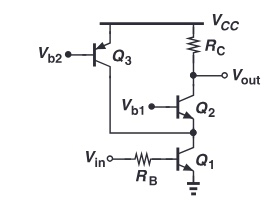

P1. 보조 전류원 Q3가 바이어스의 75%를 대는 바이폴라 캐스코드의 극점
주어진 조건
- 회로: Fig 11.91 — 바이폴라 캐스코드 ($Q_1$ 입력, $Q_2$ 캐스코드, 부하 $R_C$). $Q_3$는 $Q_1$ 컬렉터–$Q_2$ 이미터 노드에 연결된 일정 전류원으로 동작하며 $Q_1$ 바이어스 전류의 75%를 공급
- $V_A = \infty$로 가정
- 밀러 이론을 이용
- 참고 회로 (본문 Fig 11.50(a)): $Q_3$ 같은 보조 전류원이 없는 표준 바이폴라 캐스코드. $V_{in}$이 $R_S$를 거쳐 $Q_1$ 베이스로, $Q_1$ 컬렉터가 $Q_2$ 이미터, $Q_2$ 베이스는 $V_{b1}$, $Q_2$ 컬렉터가 출력이며 부하 $R_L$을 거쳐 $V_{CC}$. 이 구조에서 $A_{v,XY} = -g_{m1}/g_{m2} = -1$
구할 것
- 회로의 극점
- 여기서 밀러 효과가 Fig 11.50(a)의 표준 캐스코드 구조보다 더 중요한지 덜 중요한지

원문 보기
In the cascode of Fig. 11.91, $Q_3$ serves as a constant current source, providing 75% of the bias current of $Q_1$. Assuming $V_A = \infty$ and using Miller's theorem, determine the poles of the circuit. Is Miller's effect more or less significant here than in the standard cascode topology of Fig. 11.50(a)?
문제를 읽어요
입력 $V_{in}$은 $R_B$를 지나 $Q_1$ 베이스로 들어가요. 그림에는 노드 이름이 없어서, 이 해설에서는 $Q_1$ 베이스를 $X$, $Q_1$ 컬렉터와 $Q_2$ 이미터가 만나는 점을 $Y$라고 불러요. 출력은 $Q_2$ 컬렉터와 $R_C$가 만나는 $V_{out}$이에요.
pnp $Q_3$는 컬렉터가 $Y$에 붙은 일정 전류원이에요. $Q_1$이 흘리는 바이어스 전류 중 75%를 $Q_3$가 대므로 $Q_2$에는 나머지만 흘러요. $V_A=\infty$라서 모든 트랜지스터의 $r_o$는 무한대예요.
구할 것은 두 가지예요. 밀러 정리로 $X$, $Y$, 출력 세 노드의 극점을 구하고, 밀러 효과가 $Q_3$가 없는 표준 캐스코드(Fig. 11.50(a))보다 큰지 작은지 판단해요.
이 개념과 공식을 떠올려요
"using Miller's theorem"과 "$X$–$Y$ 사이에 걸린 $C_{\mu1}$"이 단서예요. $C_{\mu1}$은 $Q_1$의 베이스–컬렉터 커패시턴스라서 두 신호 노드 사이에 떠 있는 플로팅 커패시터(floating capacitor)예요. 밀러 정리(Miller's theorem)는 이 커패시터를 각 노드에서 접지로 가는 두 커패시터로 바꿔 줘요.
$$C_{X,M}=(1-A_{XY})C_{\mu1}$$ $$C_{Y,M}=\left(1-\frac{1}{A_{XY}}\right)C_{\mu1}$$여기서 $A_{XY}=v_Y/v_X$는 입력→출력 이득이 아니라 $C_{\mu1}$ 양 끝 노드 사이의 저주파 이득이에요. 저주파 값으로 고정하는 것이 밀러 근사(Miller approximation)이고, 그 덕분에 노드마다 병렬 $RC$ 하나로 극점(pole)을 어림할 수 있어요(CS 단의 밀러 효과).
기호를 정리해요. $g_m=I_C/V_T$는 트랜스컨덕턴스, $r_{\pi1}=\beta/g_{m1}$은 $Q_1$ 베이스에서 이미터 쪽을 본 저항, $C_{\pi}$·$C_{\mu}$·$C_{CS}$는 베이스–이미터·베이스–컬렉터·컬렉터–기판 커패시턴스예요.
근사 조건은 $V_A=\infty$(모든 $r_o\to\infty$)와 큰 β예요. 큰 β에서는 베이스 전류를 무시해 $I_{E2}\approx I_{C2}$이고, $Q_2$ 이미터를 바라본 저항이 $1/g_{m2}$예요. 핵심은 $g_m$이 컬렉터 전류에 비례하므로 $Q_3$가 $Q_2$ 전류를 줄이면 $Y$ 저항이 커지고 $A_{XY}$가 커진다는 점이에요(바이폴라 캐스코드의 세 극점, 전류원 M3를 단 캐스코드).
종이에 쓸 첫 줄
노드 $Y$에서 DC KCL을 써요. $Q_1$이 $Y$에서 끌어내리는 전류는 $Q_2$와 $Q_3$가 나눠서 대요.
$$I_{C1}=I_{C2}+I_{C3}$$$Q_3$가 75%를 대므로 $I_{C1}:I_{C3}:I_{C2}=4:3:1$이에요.
$$I_{C2}=I_{C1}-0.75I_{C1}=\frac{I_{C1}}{4}$$$g_m=I_C/V_T$이고 $V_T$는 공통이라 $g_m$도 같은 비율로 줄어요.
$$g_{m2}=\frac{g_{m1}}{4}$$밀러 배율에 넣을 $A_{XY}$를 $G_m$과 $R_{out}$으로 나눠 구해요. 입력은 $v_X$, 출력은 $v_Y$이고 커패시터는 저주파에서 열어요. $Y$를 접지에 단락하면 $Q_2$ 베이스–이미터 전압이 0이라 $Q_1$의 제어 전류가 모두 단락선으로 가요.
$Y$를 접지로 단락해 $v_Y=0$으로 두고, 접지에서 단락선을 지나 $Y$로 들어가는 전류를 $i_{Y,\mathrm{sc}}$의 양의 방향으로 둬요. $Q_1$이 $Y$에서 끌어내리는 $g_{m1}v_X$를 단락선이 그대로 대 주므로 $i_{Y,\mathrm{sc}}=g_{m1}v_X$예요.
$v_X=0$으로 두고 $Y$에서 바라보면 아래 $Q_1$ 컬렉터와 왼쪽 $Q_3$ 컬렉터는 $V_A=\infty$라 개방이에요. 남는 것은 위쪽 $Q_2$ 이미터의 $1/g_{m2}$뿐이에요.
이렇게 풀어요
먼저 고주파 소신호 모델에서 커패시터가 어느 노드 사이에 있는지 확인해요. $Q_2$와 $Q_3$의 베이스가 AC 접지라서 $C_{\pi2}$, $C_{\mu3}$는 $Y$–접지, $C_{\mu2}$는 출력–접지 커패시터예요. $Q_3$의 $C_{\pi3}$는 베이스와 이미터가 둘 다 AC 접지라 양단 전압이 0이어서 빠져요. 떠 있는 것은 $X$와 $Y$ 사이의 $C_{\mu1}$ 하나예요.
$C_{\mu1}$의 각 단자에서 커패시터로 들어가는 전류를 양으로 잡고 $A_{XY}$로 반대쪽 전압을 바꿔요.
$$i_{X,C}=sC_{\mu1}(v_X-v_Y)\approx sv_XC_{\mu1}(1-A_{XY})$$ $$i_{Y,C}=sC_{\mu1}(v_Y-v_X)\approx sv_YC_{\mu1}\left(1-\frac{1}{A_{XY}}\right)$$$A_{XY}=-4$를 넣어 밀러 커패시턴스를 구해요.
$$C_{X,M}=(1+4)C_{\mu1}=5C_{\mu1}$$ $$C_{Y,M}=\left(1+\frac{1}{4}\right)C_{\mu1}=1.25\,C_{\mu1}$$노드마다 접지 커패시턴스를 모아요. $X$에는 $C_{\pi1}$, $Y$에는 $Q_1$의 $C_{CS1}$·$Q_2$의 $C_{\pi2}$·$Q_3$의 $C_{\mu3}$·$C_{CS3}$, 출력에는 $C_{\mu2}$·$C_{CS2}$가 더해져요.
$$C_X=C_{\pi1}+5C_{\mu1}$$ $$C_Y=1.25\,C_{\mu1}+C_{CS1}+C_{\pi2}+C_{\mu3}+C_{CS3}$$ $$C_{\mathrm{out}}=C_{\mu2}+C_{CS2}$$입력원을 0으로 두면 $X$에서는 왼쪽 $R_B$와 오른쪽 $r_{\pi1}$이 모두 접지로 이어져 병렬이에요. $Y$는 앞에서 구한 $1/g_{m2}$예요. 출력에서 아래로 $Q_2$ 컬렉터를 보면 $V_A=\infty$라 무한대이므로 $R_C$만 남아요.
표준 캐스코드(Fig. 11.50(a))는 $Q_1$, $Q_2$에 같은 전류가 흘러 $g_{m1}=g_{m2}$예요. 그래서 $A_{XY}=-1$이고 $X$ 쪽 밀러 커패시턴스는 $2C_{\mu1}$이에요.
$$\frac{C_{X,M}(\text{여기})}{C_{X,M}(\text{표준})}=\frac{5C_{\mu1}}{2C_{\mu1}}=2.5$$$Q_3$가 $Q_2$ 전류를 1/4로 줄여 $Y$ 저항이 4배가 되므로 $|A_{XY}|$도 4배가 돼요. 그래서 밀러 효과는 표준 캐스코드보다 더 커요.
완성 답과 검산
$V_A=\infty$, 큰 β, 저주파 이득 $A_{XY}=-4$로 밀러 근사를 적용한 세 극점(크기, rad/s)이에요.
$$|\omega_{p,X}|=\frac{1}{(R_B\parallel r_{\pi1})(C_{\pi1}+5C_{\mu1})}$$ $$|\omega_{p,Y}|=\frac{g_{m1}/4}{1.25\,C_{\mu1}+C_{CS1}+C_{\pi2}+C_{\mu3}+C_{CS3}}$$ $$|\omega_{p,\mathrm{out}}|=\frac{1}{R_C(C_{\mu2}+C_{CS2})}$$밀러 효과는 표준 캐스코드보다 더 커요. $C_{\mu1}$이 입력에서 $2C_{\mu1}$ 대신 $5C_{\mu1}$로 보여요.
단위: $RC$는 초(s)이고 $g_m/C$도 S/F=1/s라서 세 식 모두 rad/s예요.
특수값: $Q_3$가 대는 비율을 $k$라 하면 $g_{m2}=(1-k)g_{m1}$이고 $A_{XY}=-1/(1-k)$예요. $k=0$이면 $A_{XY}=-1$로 표준 캐스코드의 $2C_{\mu1}$이 다시 나오고, $k=0.75$이면 $-4$로 위 결과와 같아요.
계수 확인: $X$ 쪽 $1+4=5$, $Y$ 쪽 $1+1/4=1.25$예요. 두 계수의 곱 $5\times1.25$와 합 $5+1.25$가 같은 6.25인 것도 $(1-A)(1-1/A)=2-A-1/A$ 관계와 맞아요.
주의할 점
밀러 배율에 입력→출력 전체 이득을 넣으면 안 돼요. $C_{\mu1}$의 양 끝은 $X$와 $Y$이므로 $A_{XY}=-g_{m1}/g_{m2}$를 써요.
$Q_3$가 소신호 저항을 더한다고 생각하기 쉬워요. $V_A=\infty$라 $Q_3$의 소신호 가지는 개방이고, $Q_3$가 바꾸는 것은 $g_{m2}$(바이어스)와 $Y$의 커패시턴스($C_{\mu3}$, $C_{CS3}$)예요.
MOS와 달리 바이폴라 입력은 $r_{\pi1}$이 유한해요. $X$의 저항은 $R_B$만이 아니라 $R_B\parallel r_{\pi1}$이에요.
조건을 바꾸어 생각해요
- $Q_3$가 $Q_1$ 바이어스 전류의 50%만 댄다면 $A_{XY}$와 $X$ 쪽 밀러 커패시턴스는 각각 얼마인가요?
- $Q_3$의 얼리 전압이 유한해 $r_{o3}$가 $Y$와 AC 접지 사이에 생긴다면 $Y$의 저항은 어떻게 바뀌고, $r_{o3}\gg1/g_{m2}$일 때 밀러 배율은 크게 달라지나요?
$Q_3$가 바이어스의 75%를 대면 $g_{m2}=g_{m1}/4$가 돼요.
$$A_{XY}=-\frac{g_{m1}}{g_{m2}}=-4$$$C_{\mu1}$은 $X$에서 $5C_{\mu1}$, $Y$에서 $1.25\,C_{\mu1}$로 보여요.
$$|\omega_{p,X}|=\frac{1}{(R_B\parallel r_{\pi1})(C_{\pi1}+5C_{\mu1})}$$$Y$ 극점은 $g_{m2}/C_Y$이고 $C_Y$에는 $Q_3$의 $C_{\mu3}$, $C_{CS3}$도 들어가요.
출력 극점은 $1/[R_C(C_{\mu2}+C_{CS2})]$예요.
표준 캐스코드의 $2C_{\mu1}$보다 커서 밀러 효과가 더 커요.